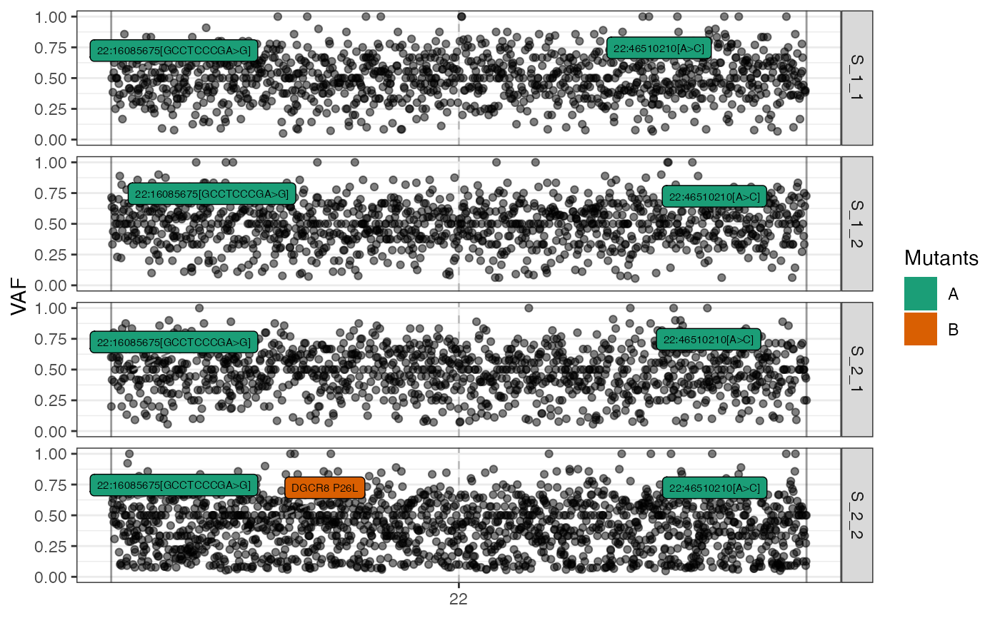
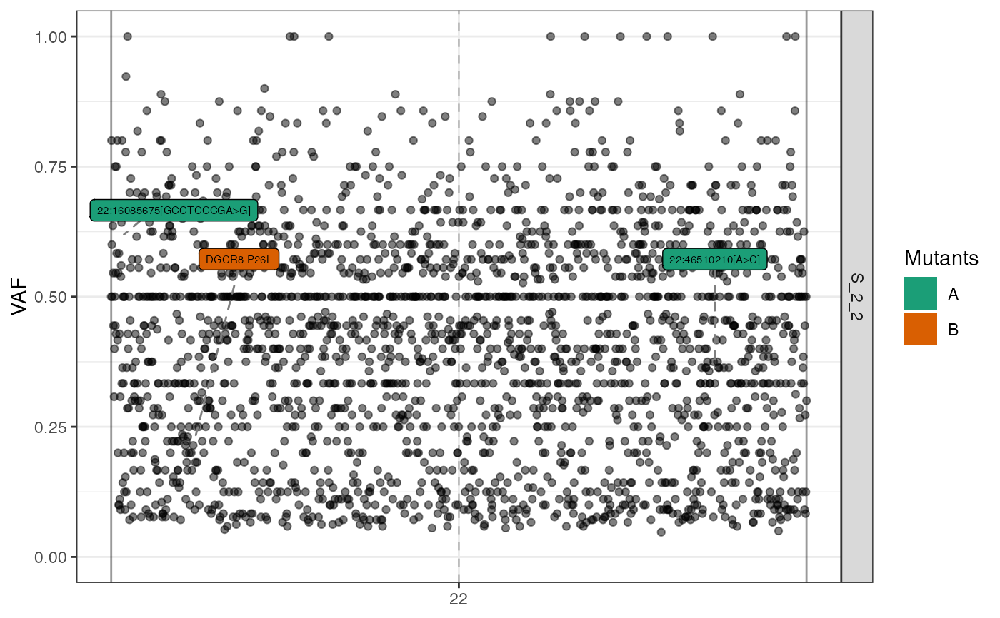
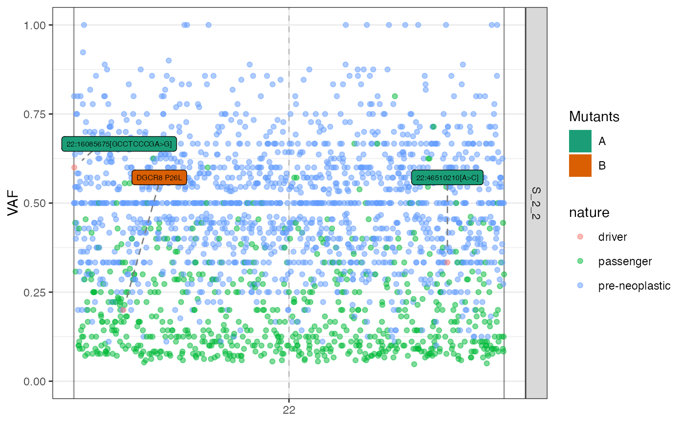
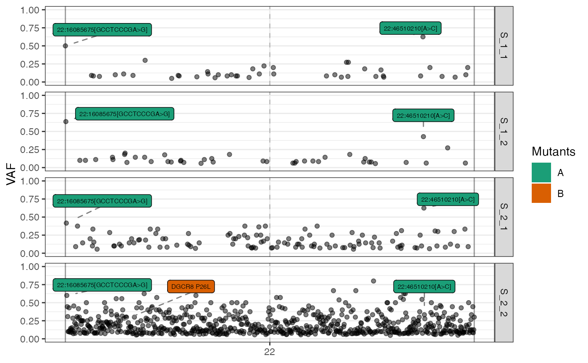
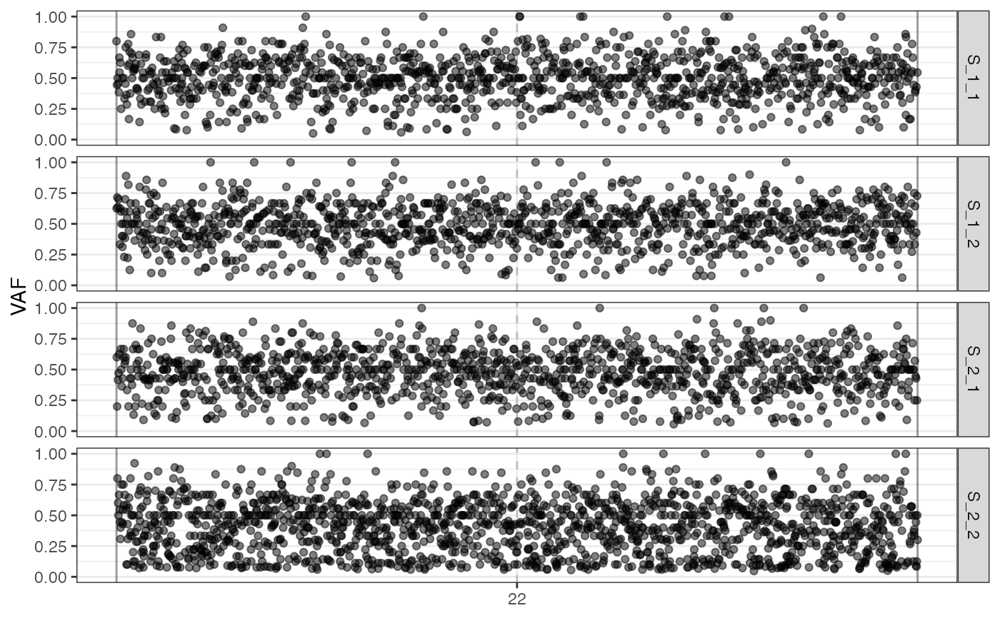

Plot the genome-wide Variant Allele Frequency (VAF)
Source:R/plot_genome_wide_mutations.R
plot_VAF.RdThis function plots the genome-wide Variant Allele Frequency (VAF) of a specific sample.
Usage
plot_VAF(
seq_result,
chromosomes = NULL,
samples = NULL,
labels = NULL,
mutation_filter = filter_germinal,
driver_mutations = NULL,
driver_mutation_labels = TRUE,
cuts = c(0, 1),
N = 5000
)Arguments
- seq_result
Either the output of
simulate_seq()or a data frame containing sequencing results.- chromosomes
A character vector specifying the chromosomes to include in the plot (default: all the chromosomes in
seq_res).- samples
A character vector specifying the sample names to include in the plot. When set to
NULL, the function includes all samples except the "normal sample" (default:NULL).- labels
A data frame column labelling each mutation. Each label is associated to a different colour in the plot (default:
NULL).- mutation_filter
A function filtering mutations from the input data (default: a function filtering out "germinal" mutations, e.g.,
function(x) x %>% dplyr::filter(nature != "germinal")).- driver_mutations
The data frame of the driver mutations as returned by
PhylogeneticForest$get_driver_mutations(). This parameter can be avoided whenseq_resultis the result of the functionsimulate_seq()(default:NULL).- driver_mutation_labels
A Boolean value to enable/disable driver mutation labels in the returned plot (default: TRUE).
- cuts
A numeric vector specifying the range of VAF values to include in the plot (default:
c(0, 1)).- N
The number of mutations to sample for plotting (default: 5000).
Examples
# use a sequencing result example
seq_results <- example("Sequencing results")
# plotting the VAF over all samples
plot_VAF(seq_results)

# plotting the VAF for sample S_2_2 only
plot_VAF(seq_results, samples = c("S_2_2"))

# plotting the VAF for S_2_2 with labels
plot_VAF(seq_results, samples = "S_2_2",
labels = seq_results$mutations["nature"])

# let us define a function to filter germinal and pre-neoplastic
# from the input data
library(dplyr)
filter_data <- function(data) {
data %>% dplyr::filter(!nature %in% list("germinal",
"pre-neoplastic"))
}
# plotting the VAF without germinal and pre-neoplastic
plot_VAF(seq_results, mutation_filter = filter_data)

# the same plots can be drawn by using the mutations data frame
# in place of the `simulate_seq()` output
# filter germinal mutations
f_seq <- seq_results$mutations %>%
dplyr::filter(nature != "germinal")
# plotting the VAF
plot_VAF(f_seq)
#> Warning: Missing driver mutations. Disabling driver mutation labelling.
